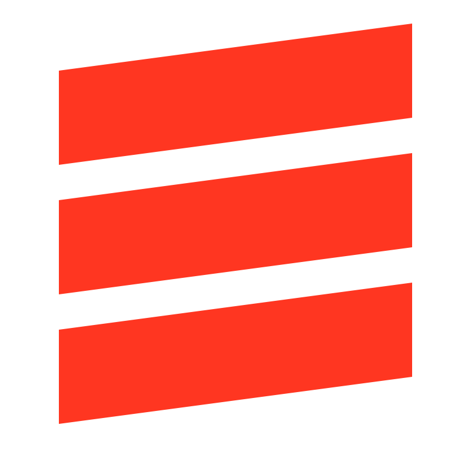

Lakehouse,
simplified.
simplified.
How the Deloitte+Databricks Alliance helps enterprise teams move from legacy data stacks to a unified intelligence platform, in weeks, not quarters.

01 / 04
Section
Where the alliance
delivers value.
delivers value.
Today
What we'll cover.
01
Why the alliance, why now
10 min
02
Our delivery playbook
15 min
03
Three client stories
20 min
04
What's next, and how to engage
10 min
03 / 10
Why now
The data stack has changed. So has the buyer.
CIOs are no longer buying tools. They are buying outcomes, and they need a partner who can stand up the platform and run it, not just slide-ware a roadmap.
- One platform. Lakehouse unifies warehousing, ML, and BI on open formats.
- One governance model. Unity Catalog spans cloud, region, and workload.
- One delivery team. Deloitte brings industry depth; Databricks brings the platform.
- One contract. Joint go-to-market simplifies procurement and accountability.
04 / 10
By the numbers
The alliance, at a glance.
200+
Joint engagements delivered since 2020
↑ 38% YoY
$40M
Average annual savings on enterprise migrations
across 12 reference accounts
6×
Faster time-to-insight vs. legacy warehouse stack
measured at production cutover
05 / 10
Before · After
From three stacks to one.
Legacy
Three engines,
Three engines,
three teams
- Warehouse for BI, separate cluster for ML
- Nightly ETL jobs, 9-hour batch windows
- Five governance tools, manual reconciliation
- Six-month procurement per net-new use case
Lakehouse
One platform,
One platform,
one team
- BI, ML, and AI run on the same governed data
- Streaming + batch on Delta, 47-minute SLA
- Unity Catalog: single permission model end-to-end
- New use cases ship in weeks, not quarters
06 / 10
"
Deloitte didn't sell us a platform. They delivered an outcome, and now we run it ourselves.VP, Enterprise Data Platform Global Fortune 100 retailer · 14-week migration · 2024
Joint capabilities
What we deliver together.
Data foundation
Stand up a governed lakehouse on Unity Catalog with our reference architecture and migration accelerators.
- Migration assessment
- Delta Lake landing zones
- Governance & lineage
Mosaic AI
Production-grade GenAI: RAG over enterprise data, fine-tuning, evaluation, and serving, with guardrails.
- Domain RAG patterns
- Model evaluation harness
- Cost & latency tuning
Industry solutions
Pre-built accelerators for retail demand sensing, banking risk, life-sciences trials, and supply chain.
- 14 industry packs
- Reference data models
- Vertical KPIs out of the box
08 / 10
Delivery playbook
Twelve weeks to production.
Weeks 1-2
Discovery
Workload inventory, business-case sizing, target-state architecture.
Weeks 3-5
Foundation
Workspace, Unity Catalog, network, identity, and CI/CD wired up.
Weeks 6-10
Migration
Three priority workloads ported with parity testing and rollback.
Weeks 11-12
Cutover
Run-state handoff to the client team. Hypercare for 30 days.
09 / 10
Let's build
what's next.
what's next.
Alliance lead
A. Patel
Practice
AI & Data Engineering
Get in touch
alliance@deloitte.com